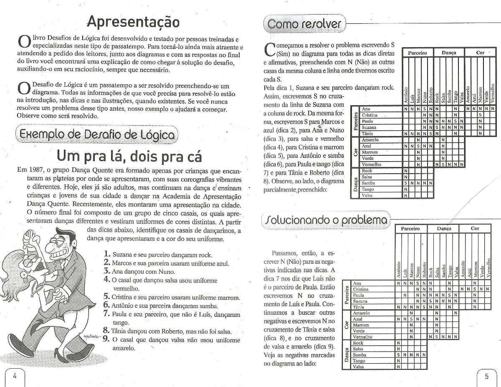

Thales Macedo Garitezi
Termos: átomos, números, variáveis e termos compostos.
mortal(X) :- man(X).
man(socrates).
man(aristoteles).
?- mortal(socrates).
true.
?- mortal(X).
X = socrates ;
X = aristoteles.lengthdifmsortmaplistpermutationtransposemember2
Constraint Logic Programming over Finite Domains3
Introduz operadores de restrição sobre inteiros.
resolver(Pessoas) :-
length(Pessoas, 4),
maplist(length_(4), Pessoas),
transpose(Pessoas, Attrs),
Attrs = [_Casais, Diferenciais, Hoteis, Precos],
maplist(length_(4), Attrs),
permutation([100, 200, 300, 400], Precos),
permutation([ar_condicionado, bela_vista, janta, vaga_garagem], Diferenciais),
permutation([california, floresta_nativa, ponte_grande, volte_sempre], Hoteis),
Pessoas = [GR, JV, JL, LE],
GR = [gisele_rafael, _, _, _],
JV = [jeny_victor, _, _, _],
JL = [juliana_luis, _, _, _],
LE = [lucia_eder, _, _, _],%% dica 1. O casal que ficou no hotel com vaga na garagem pagou R$
%% 100 a mais na diária do que o casal Juliana e Luis.member([CVagaGaragem, vaga_garagem, _, PVagaGaragem], Pessoas),
member([juliana_luis, DJulianaLuis, _, PJulianaLuis], Pessoas),
CVagaGaragem \= juliana_luis,
DJulianaLuis \= vaga_garagem,
PVagaGaragem #= PJulianaLuis + 100,%% dica 2. O casal que se hospedou no hotel Volte Sempre pagou uma
%% diária mais cara do que o casal Jeny e Victor.member([CVolteSempre, _, volte_sempre, PVolteSempre], Pessoas),
member([jeny_victor, _, HJenyVictor, PJenyVictor], Pessoas),
CVolteSempre \= jeny_victor,
HJenyVictor \= volte_sempre,
PVolteSempre #> PJenyVictor,member([_, _, floresta_nativa, PFlorestaNativa], Pessoas),
member([_, _, volte_sempre, PVolteSempre], Pessoas),
PFlorestaNativa #> PVolteSempre,%% dica 5. O hotel que tem ar condicionado é o Floresta Nativa ou
%% o hotel com a diária de R$ 100.member([_, ar_condicionado, HArCondicionado, PArCondicionado], Pessoas),
( HArCondicionado == floresta_nativa, PArCondicionado #\= 100
; HArCondicionado \= floresta_nativa, PArCondicionado #= 100 ),%% dica 6. Sobre o casal Lucia e Eder e o casal que se hospedou no
%% hotel Floresta Nativa, um ficou no quarto com bela vista e o
%% outro pagou R$ 200 de diária, não necessariamente nessa ordem.member([lucia_eder, DLuciaEder, HLuciaEder, PLuciaEder], Pessoas),
member([CFlorestaNativa, DFlorestaNativa, floresta_nativa, PFlorestaNativa], Pessoas),
CFlorestaNativa \= lucia_eder,
HLuciaEder \= floresta_nativa,
( DLuciaEder == bela_vista, PFlorestaNativa #= 200
; DFlorestaNativa == bela_vista, PLuciaEder #= 200 ).$ swipl -g 'resolver_formatado(Ps)' desafio2.pl </dev/null
Tufe.